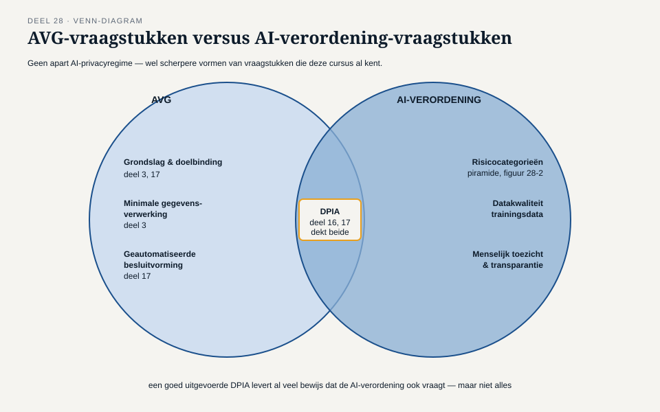
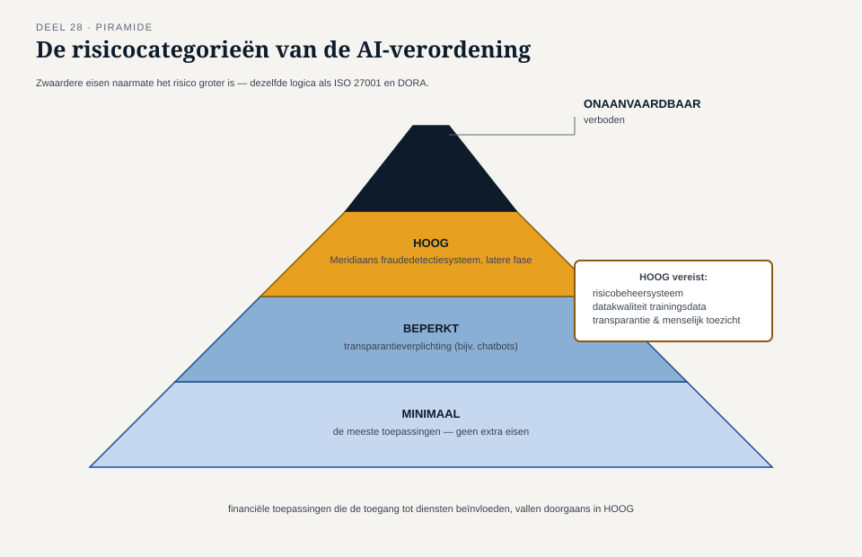

Deel 28 — Nieuwe risico's: AI, en wat daarna komt
Slidedeck · Ductus-cursus Informatiebeveiliging en privacy · niveau 3 · deel 28 van 30 · 24 slides
Slide 1 — Titel
Informatiebeveiliging en Privacy
Deel 28 · Niveau 3 · Expert
Nieuwe risico's: AI, en wat daarna komt
Slide 2 — Eén voorstel, twee bureaus
Een AI-systeem voor fraudedetectie in de acceptatieprocedure.
Merel: nieuw aanvalsoppervlak.
Sanne: mogelijk geautomatiseerde besluitvorming.
Slide 3 — Geen nieuw vak
Uitbreiding van het bestaande instrumentarium.
Niet een compleet nieuwe cursus.
Slide 4 — AI en de AVG
Geen apart "AI-privacyregime".
Gewoon de AVG — met scherpere vragen.
Slide 5 — Vier bestaande vraagstukken, scherper

Grondslag/doelbinding · minimale verwerking
· DPIA-plicht · geautomatiseerde besluitvorming
Slide 6 — De spanning
"Meer data is beter voor het model"
is geen grondslag.
Slide 7 — Opdracht 28.1
Waarom is "AI vereist een compleet nieuw kader" onjuist?
Noem twee bestaande concepten die scherper worden.
Slide 8 — Twee fasen, twee beoordelingen
Fase 1: signalering, mens beoordeelt.
Fase 2: systeem versnelt de beslissing zelf.
Slide 9 — Terug naar deel 17
Betekenisvolle tussenkomst? Of schijn?
Precies de vraag die hier opnieuw speelt — nu scherper.
Slide 10 — Opdracht 28.2
Welk regime per fase? Waarom apart beoordelen?
PAUZE
Slide 11 — De AI-verordening

Onaanvaardbaar · Hoog · Beperkt · Minimaal risico
Zwaardere eisen naarmate het risico groter is.
Slide 12 — Een bekend patroon
DORA-proportionaliteit (deel 24).
DPIA-drempel (deel 16).
Nu: AI-risicocategorieën.
Slide 13 — Opdracht 28.3
Waar zag je deze structuur al eerder? Wat is de gemeenschappelijke logica?
Slide 14 — Quantumrisico
Geen quantumcomputer vandaag krachtig genoeg.
Toch al relevant. Waarom?
Slide 15 — "Harvest now, decrypt later"

Vandaag onderscheppen en bewaren.
Morgen — over twintig jaar — alsnog ontsleutelen.
Slide 16 — Waarom dit Meridiaan raakt
Bewaartermijnen van decennia (deel 8).
Precies de horizon waarbinnen dit relevant wordt.
Slide 17 — Opdracht 28.4
Waarom is dit urgent voor Meridiaan, niet voor korte-houdbaarheid-data?
Slide 18 — Het antwoord
Niet: wachten tot de dreiging concreet is.
Wel: cryptografische wendbaarheid.
Slide 19 — Terug naar deel 6
Tarik en Ruud: cryptografie los, verweven, niet doorgrond.
Slecht voorbereid op een toekomstige overstap.
Slide 20 — Wat wendbaarheid vraagt
Centraal, flexibel cryptografisch beleid en sleutelbeheer.
Eén punt vervangen — niet elk systeem apart herbouwen.
Slide 21 — Opdracht 28.5
Waarom is verweven cryptografie slechter voorbereid?
Slide 22 — Merel en Sanne's advies aan Hugo
Fase 1: verkennen, mét DPIA en leveranciers-eisen.
Fase 2: nog niet — apart, hernieuwd beoordeeld zodra concreet.
Slide 23 — Weer het onderbouwde nee
Nu toegepast op een risico dat de cursus zelf nog leert kennen.
Slide 24 — Vooruitblik
Deel 29: ethiek, de moeilijke gesprekken,
en examentraining voor niveau 3